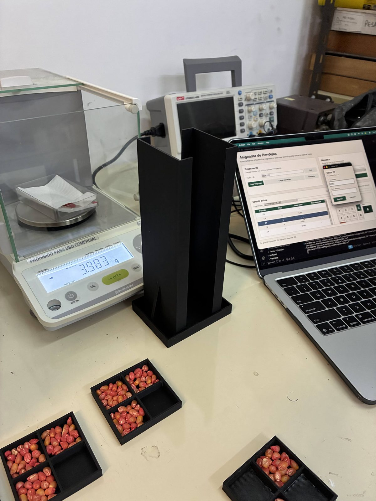
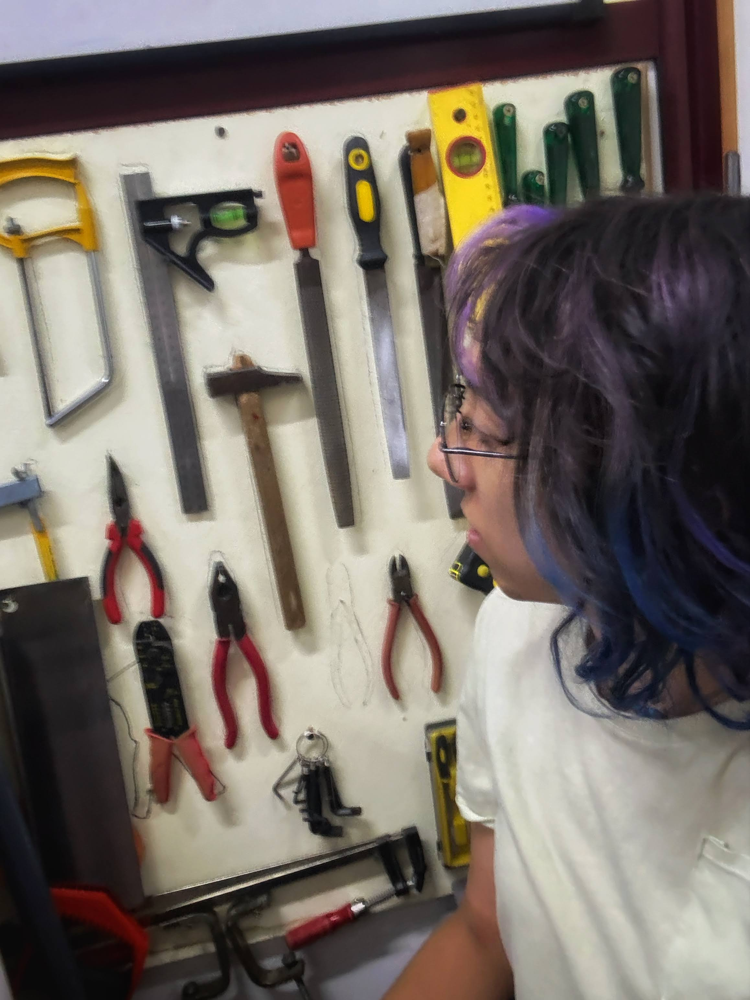

31 Marzo, 2026
Primer mes de tesis en magnetobiología
Cumplí mi primer mes trabajando en la tesis de la Licenciatura en Física en el laboratorio de Magnetobiología (MBLab), bajo la dirección de Leonardo Makinistian. El proyecto se centra en investigar tratamientos magnéticos aplicados a semillas de maíz de uso agropecuario, buscando entender cómo distintas condiciones de exposición podrían influir en procesos biológicos relevantes para la germinación y el desarrollo temprano.
Este trabajo nace también de un proyecto en conjunto con mi director, Leonardo Makinistian, Daniel Guerreiro y Lucía Guerreiro.

